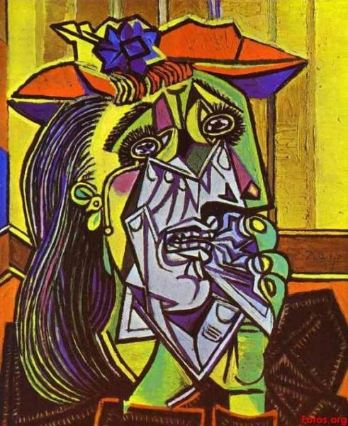
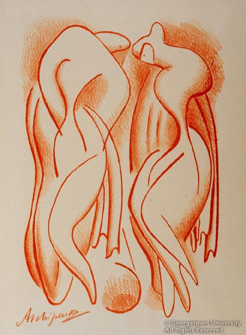

Notre théme est le Cubisme ! Découvrez avec nous le monde du cube à travers ses artistes. Les articles suivants ont été écrits par Chloé, Rémi, Laurie & Clélia, élèves du groupe MMI1C. Félicia est l'intégrateur web et Chloé s'occupe du CSS.
Fernand Léger, né le 4 février 1881, à Argentan (Orne) et mort le 17 août 1955, à Gif-sur-Yvette (Essonne), est un peintre français, aussi créateur de cartons de tapisseries et de vitraux, décorateur, céramiste, sculpteur, dessinateur, illustrateur. Il a été l’un des premiers à exposer publiquement des travaux d’orientation cubiste1, même si on a parfois qualifié son style de « tubiste ». Ses origines normandes, son physique de « brute au physique désavantageux » qu’il attribue à un père éleveur et son franc-parler ont souvent fait passer Fernand Léger pour le « paysan de l’avant-garde ». À dix-neuf ans, il découvre le Paris de 1900. Léger n’y accomplira jamais la formation d’architecte qu’il est venu y poursuivre. Lentement, s’imprégnant patiemment du mouvement dynamique de la ville, il troquera son tire-ligne pour les pinceaux : l’assurance d’un métier stable contre la promesse d’une liberté périlleuse.
 Pablo Ruiz Picasso, né à Malaga, Espagne, le 25 octobre 1881 et mort le 8 avril 1973 (à 91 ans) à Mougins, France, est un peintre, dessinateur et sculpteur espagnol1 ayant passé l'essentiel de sa vie en France. Artiste utilisant tous les supports pour son travail, il est considéré comme le fondateur du cubisme avec Georges Braque et un compagnon d'art du surréalisme. Il est l'un des plus importants artistes du XXe siècle, tant par ses apports techniques et formels que par ses prises de positions politiques. Il a produit près de 50 000 œuvres dont 1 885 tableaux, 1 228 sculptures, 2 880 céramiques, 7 089 dessins, 342 tapisseries, 150 carnets de croquis et 30 000 estampes (gravures, lithographies, etc.)2.

Fils d'ingénieur, il a lui aussi étudier les mathématiques. L'artiste est d'ailleurs passionné par les relations antre art et science. Il se forme à la peinture et à la sculpture à Kiev et à Moscou de 1902 à 1906. Cette période lui a permis de se passionner pour les icônes byzantines, les fresques et les mosaïques de Kiev. Après un séjour à Moscou, il s'installe à Paris en 1908 où il entre en contact avec les courants d'avant-garde, en particulier le groupe des cubistes. Il est installé à La Ruche, 2, passage de Dantzig, un ancien pavillon des vins de l'Exposition universelle de 1889 aménagé en ateliers d'artistes. Il travaille en solitaire, préférant aller au musée du Louvre pour étudier la sculpture archaïque grecque plutôt que de se rendre aux Beaux-Arts dont il dédaigne l'enseignement académique. Un reproche que l'artiste a déjà adressé à ses professeurs de l'école d'art de Kiev qui ont fini par le renvoyer. Influencé par Rodin jusqu'à ses travaux présentés à Moscou en 1906, il s'affirme dès ses travaux parisiens à 24 ans comme l'un des chefs de file de la sculpture d'avant-garde.
Jacques Villon, dont le vrai nom est Gaston Emile Duchamp, naît le 31 juillet 1875 à Damville. C’est le demi-frère de Marcel Duchamp et de Raymond Duchamp-Villon. Il prend son pseudonyme en hommage au poète français François Villon. De 1894 à 1906, Jacques Villon travaille comme caricaturiste et illustrateur pour plusieurs magazines à Paris. A cette époque, un grand nombre d’affiches et de feuillets humoristiques voit le jour. A partir de 1906, il se consacre à la peinture, influencé initialement par Edgar Degas et Henri de Toulouse-Lautrec. C’est à partir de 1911 qu’il est probablement membre du groupe d’artistes français la "Section d’or", aux côtés de son frère Marcel Duchamp, d’Albert Gleizes, de Francis Picabia et de Juan Gris. Après cette période, Jacques Villon se retire à Puteaux, jadis un village dans les environs de Paris, pour pouvoir y travailler en paix. Il peint à peu près 700 tableaux. A la fin des années 40, le directeur d’une galerie finit par le découvrir. Il devient surtout célèbre grâce à ses travaux graphiques. Jacques Villon est longtemps considéré par les sciences de l’art comme un représentant du cubisme. Aujourd’hui, celles-ci estiment également ses liens intéressants avec d’autres styles tels que l’impressionnisme et le futurisme. Jacques Villon meurt le 9 juin 1963 à Puteaux près de Paris.